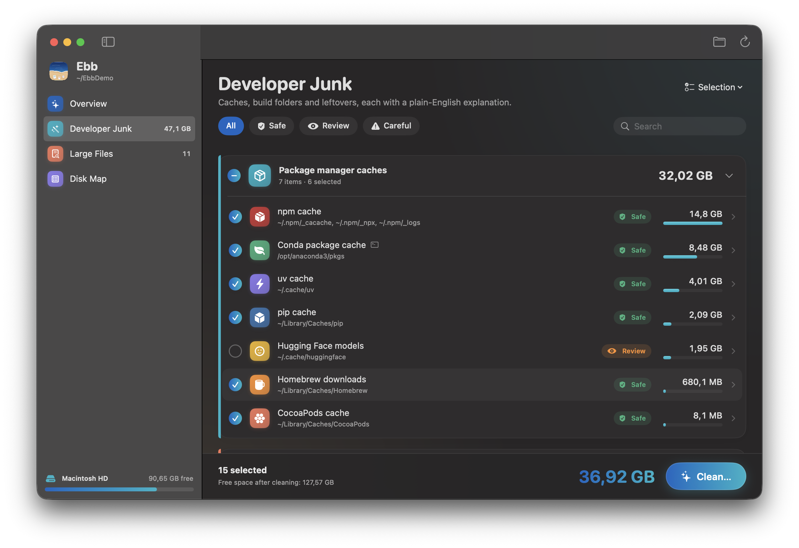
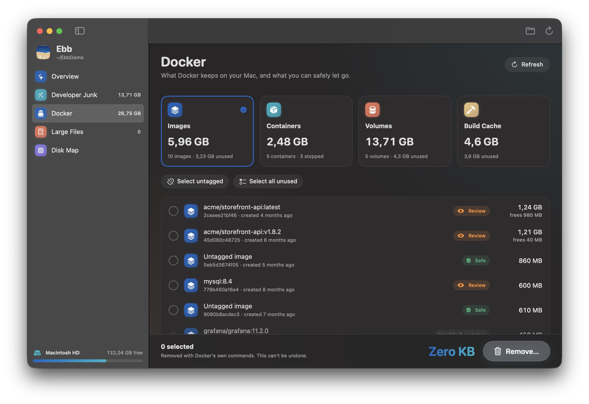
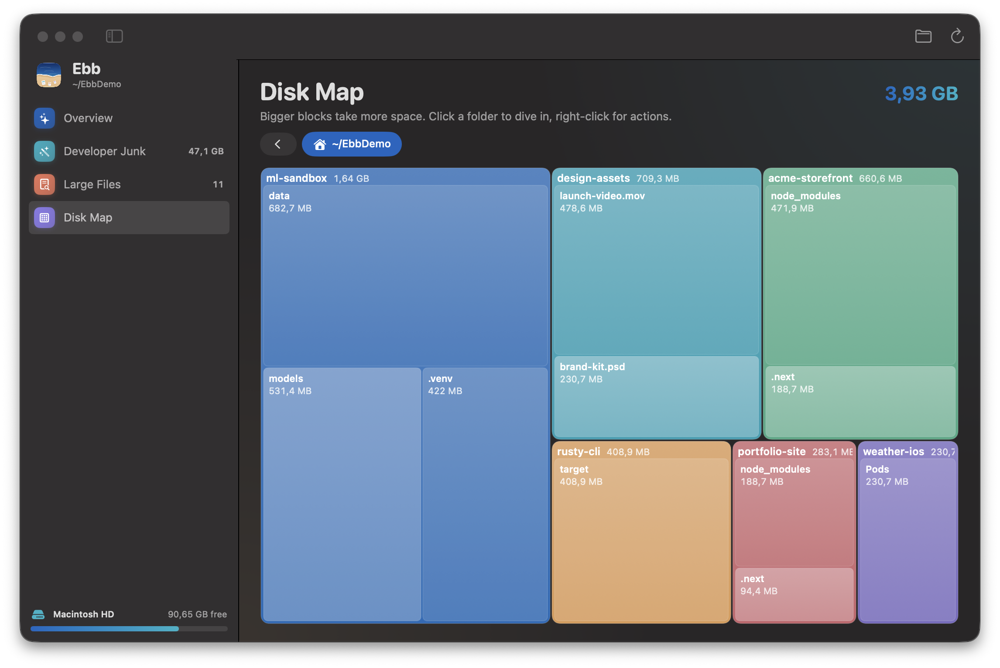

Why Ebb
Developer Macs fill up with things that rebuild themselves
Package caches, node_modules in projects you haven't opened in months, Docker images and Xcode leftovers pile up. macOS hides most of them under "System Data". Ebb finds them, tells you what each one is, and clears them safely.
duFeatures
Everything taking space, explained in plain English
📦Package manager caches
npm, Yarn, pnpm, Bun, pip, uv, conda, Homebrew, Gradle, Cargo, CocoaPods, Go modules and Hugging Face models.
🗂️Old project build folders
node_modules, .next, Python virtualenvs, Rust target, SwiftPM .build and Pods, found through each project's manifest file.
🐳Docker, image by image
Images, stopped containers, volumes and build cache, with what's unused and what's still needed.
🔨Xcode & simulators
DerivedData, simulator caches, device support files, archives and unavailable simulators.
⌨️Code editor caches
Cursor, VS Code, Windsurf and JetBrains caches. Your settings and extensions are never touched.
🗺️Disk Map & Large Files
A treemap of your disk, plus every file over 100 MB with thumbnails and an "untouched for" badge.
🧩Complete app uninstaller
Removes apps with their caches, preferences and launch agents, flags apps you haven't opened in 90 days, and finds leftovers from apps you already deleted.
🪞Clone-aware duplicates
Finds identical files with SHA-256 and checks how much each copy really owns on APFS, so it never promises space you won't get back.
⚙️Startup & maintenance
Lists background items and flags broken ones. One-click fixes thin Time Machine snapshots, flush DNS and rebuild Spotlight.
Developer Junk
Clear npm, pip and conda caches and old node_modules
Each item shows a label, its size and why it's safe. Where a tool has its own cleanup command, Ebb uses it (conda clean, pnpm store prune, go clean -modcache) instead of guessing at files.
- Projects you touched this week are never pre-selected
node_modulesinside tools such as~/.nvmor~/.vscodeare left alone- Undo puts everything back from the Trash


Docker disk usage on Mac
See why Docker is eating your disk, and fix it
Docker Desktop keeps every image, stopped container, volume and build cache inside one huge disk image. Ebb opens it up.
- Sizes for every image, container, volume and the build cache
- Unused and untagged images flagged, with how much each one frees
- Volumes in use are locked, so database data isn't lost by accident
- Removes only what you pick, with
docker rm,docker rmi,docker volume rmanddocker builder prune
Disk Map
Find what's filling your Mac at a glance
Bigger blocks take more space. Click a folder to dive in, or right-click to show it in Finder or move it to the Trash. Large Files lists everything over 100 MB, filtered by size and by how long it's sat untouched.

Safety first
How Ebb decides what's safe to delete
| Label | What it means | Pre-selected? |
|---|---|---|
| ✅ Safe | Rebuilds itself automatically: package caches, editor caches, DerivedData, logs | Yes |
| 👀 Review | Can be rebuilt but costs time or bandwidth: node_modules, AI models, app caches, unused Docker images | Only projects untouched for 30+ days |
| ⚠️ Careful | May hold your data, such as unused Docker volumes and iPhone backups | Never |
Nothing is deleted outright. Files go to the Trash, and Undo All puts them back. Ebb makes no network requests and collects no data.
Guide
How to free up "System Data" on a Mac
"System Data" in System Settings → General → Storage lumps together caches, developer tools, Docker and Time Machine snapshots. These are the usual culprits on a developer's Mac, and the commands that clear them. Ebb runs the same checks for you and shows the sizes first.
npm cache
npm cache clean --force
Packages npm downloaded before. They come back on the next install.
Docker
docker system df docker system prune
Removes stopped containers, unused networks, dangling images and build cache.
Xcode DerivedData
rm -rf ~/Library/Developer/Xcode/DerivedData
Build products Xcode rebuilds. The next build is slower.
conda & Homebrew
conda clean --all brew cleanup --prune=all
Old package tarballs and downloads. Installed tools keep working.
Compare
A free alternative to CleanMyMac and DaisyDisk
| Ebb | CleanMyMac | DaisyDisk | Mole (CLI) | |
|---|---|---|---|---|
| Price | Free | Subscription | Paid | Free |
| Open source | Yes (MIT) | No | No | Yes (GPL) |
| Native Mac app | Yes | Yes | Yes | Terminal |
| Complete app uninstaller | Yes | Yes | No | Yes |
| Understands developer junk | Yes | Some | No (sizes only) | Yes |
Install
Download Ebb in under a minute
Prefer Homebrew?
brew tap znlong2203/ebb https://github.com/ZNLong2203/Ebb brew install --cask znlong2203/ebb/ebb
Requires macOS 14 Sonoma or later on Apple Silicon. Ebb is ad-hoc signed, and you can read every line of the source code or build it yourself.
FAQ
Questions people ask
How do I clear System Data on my Mac?
System Data is mostly caches, developer tools, Docker and Time Machine local snapshots. Ebb shows the parts it can see, explains each one and cleans it to the Trash. macOS removes snapshots and purgeable space by itself when the disk runs low.
Is it safe to delete node_modules?
Yes. npm install brings it back. Ebb only pre-selects node_modules in projects you haven't touched for over 30 days, and you can undo from the Trash.
Why is Docker using so much space on my Mac?
Docker Desktop stores every image, stopped container, volume and build cache in one disk image. Ebb's Docker view lists them with sizes and removes the unused ones you pick with Docker's own commands.
How do I completely uninstall an app on Mac?
Dragging an app to the Trash leaves its support files, caches, preferences and launch agents behind in ~/Library. Ebb's Applications view moves the app and all of that to the Trash together, and also finds leftovers from apps you deleted earlier.
How do I find duplicate files on Mac?
Ebb compares files of 1 MB or more by size and SHA-256 hash. It's APFS clone-aware: copies that already share storage are flagged, so it only promises space you'd really get back.
Does Ebb delete files permanently?
No. Files go to the Trash and Undo All puts them back. Only tools' own commands (such as docker rm) and emptying the Trash can't be undone, and Ebb tells you before it runs them.
Why isn't Ebb on the Mac App Store?
App Store apps are sandboxed and can't scan your whole disk, which is the whole point of a disk cleaner.
Is Ebb really free?
Yes. It's MIT-licensed open source, with no subscription, account, ads or tracking.
Give your Mac room to breathe
Free, open source and Trash-first. Takes a minute to install.